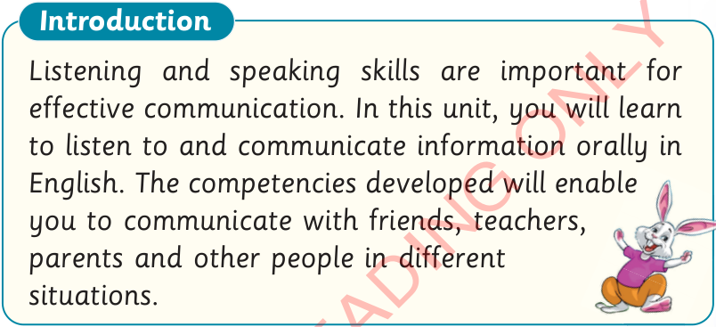
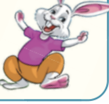

Unit One
Listening and speaking/observing and signing

Listening and speaking/observing and signing skills are important for effective communication.
In this unit, you will learn to listen to /observing and communicate information orally in English.
The competencies developed will enable you to communicate with friends, teachers, parents and other people in different situations.
